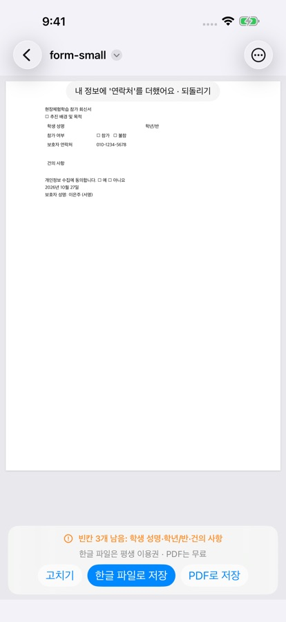

한글 양식, 이름·연락처·주소를 매번 다시 쓰지 않으려면
HWP 뷰어를 혼자 만드는 개발자 ongsim이 직접 쓴 안내입니다.
회신서·신청서·동의서는 받을 때마다 같은 이름·연락처·주소를 다시 써야 합니다. 2026년 10월 29일(한국 시간) 공개된 HWP 뷰어 1.4.0(iPhone·iPad·Mac)부터는 내 정보를 한 번 저장해 두고 다음 양식에 한 번에 채울 수 있습니다.
처음 한 번 저장하기
- 카카오톡이나 메일로 받은 한글 양식(.hwp·.hwpx)을 HWP 뷰어로 엽니다.
- 오른쪽 위 ‘더 보기’(⋯) → ‘양식 채우기’를 누릅니다. Mac은 창 위 도구 막대의 ‘양식 채우기’입니다.
- 양식 채우기 맨 위의 ‘내 정보 다음에도 쓰기’를 켭니다.
- 성명·연락처·주소 같은 칸을 채우고 완료합니다. 쓴 값이 이 기기와 내 iCloud에 저장됩니다.
다음 양식부터 한 번에
저장된 내 정보가 있으면 양식 채우기 맨 위 줄이 ‘내 정보로 채우기’ 버튼으로 바뀝니다. 누르면 맞는 빈칸을 채우고 ‘빈칸 n개를 채웠습니다. 고칠 곳이 있으면 바로 고치세요.’라고 알려 줍니다.
내 정보에 없던 항목을 새로 쓰고 완료하면 문서 위에 ‘내 정보에 ‘연락처’를 더했어요 · 되돌리기’가 잠깐 뜹니다. ‘되돌리기’를 누르면 방금 더한 항목만 뺍니다.
채운 뒤에는 남은 빈칸을 문서 아래 한 줄로 알려 줍니다. 보내기 전에 빠뜨린 칸을 확인할 수 있습니다.

어떤 칸에 들어가나요
- 성명
- 연락처(휴대전화)
- 생년월일
- 주소
- 소속(직장·근무처)
- 오늘 날짜(작성일·신청일 같은 칸). 날짜는 저장하지 않습니다.
‘신청인·보호자·학부모·작성자·동의인’처럼 작성하는 사람 본인을 가리키는 칸에 넣습니다. 이름표가 ‘성명’·‘주소’뿐인 칸은 문서에서 처음 나오는 칸에만 넣습니다.
들어가지 않는 칸
- ‘학생·자녀·대리인·배우자·보증인·비상연락처’처럼 다른 사람의 칸일 수 있는 곳은 비워 둡니다. 틀린 값보다 빈칸이 낫기 때문입니다.
- 주민등록번호·외국인등록번호를 묻는 칸은 채우지도 저장하지도 않습니다. 생년월일 칸에 주민등록번호를 써도 저장하지 않습니다.
다른 기기·지우기
같은 Apple 계정의 iPhone·iPad·Mac에서 함께 씁니다(iCloud). 개발자 서버로는 보내지 않습니다. 자세한 내용은 개인정보 처리방침에 있습니다.
- iPhone·iPad: ‘더 보기’(⋯) → ‘앱 정보’ → 내 정보 → ‘내 정보 지우기’
- Mac: 메뉴 막대 ‘HWP 뷰어’ → ‘HWP 뷰어에 관하여’ 창의 내 정보 → ‘내 정보 지우기’
지우면 이 기기와 내 iCloud에서 함께 지워집니다.
무료로 쓸 수 있는 범위
- 내 정보 저장과 ‘내 정보로 채우기’는 무료입니다.
- 서명 없이 채운 양식을 PDF로 저장하는 것은 무료입니다.
- 한글 파일로 저장, 서명 넣은 PDF 같은 양식 저장은 합쳐서 처음 3번 무료이고, 그 뒤에는 평생 이용권으로 계속 쓸 수 있습니다.
채운 .hwp 양식을 .hwp 그대로 회신하는 방법은 가정통신문 회신서, 아이폰에서 작성·서명해서 보내기에 있습니다.